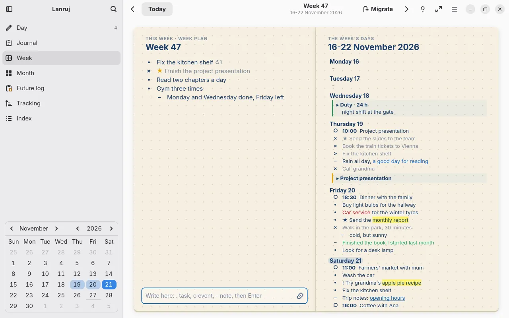

Day, week, month and future log
The week page shows your plan next to each day of the week. The month page holds the calendar and the month's tasks. The future log keeps what's coming later, and at the start of each month its entries move into place on their own.
